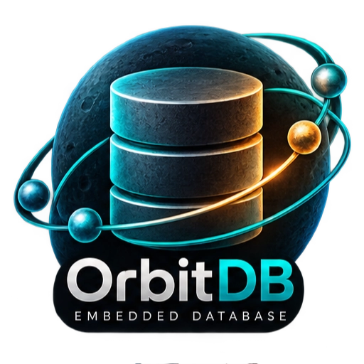
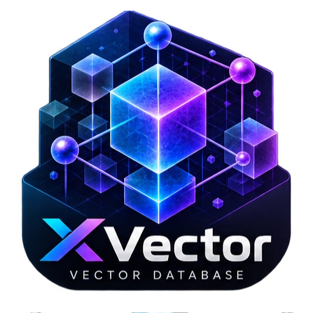
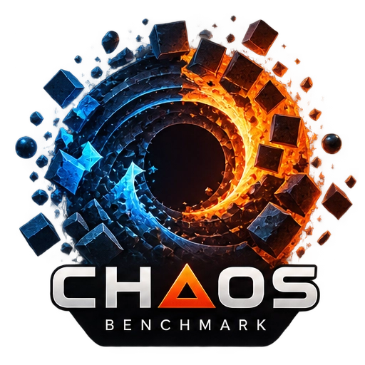

Projects
Four projects beyond the toolchain, each with its own site on a subdomain. They are built with the released compiler, the standard library and registry packages -- the same way any external project would be.
Pulse is public with its first release; the other three repositories stay private while they harden. The pages say what works today and what is next, and every claim points at evidence in the repositories. Releases and mirror installers follow for each project, like the toolchain's.
The projects
Pulse beta
The official XIOM web backend: a single-binary HTTP/1.1 service with sessions and JWT, CSRF protection, a crash-safe append store, rate limiting, JSON access log and audit trail, and Prometheus metrics; TLS is verified through nginx. Verified on Windows and Linux; honest beta, in development.
pulse.xiom-lang.org

OrbitDB experimental
An embedded database engine in pure XIOM: B-tree index, write-ahead log, query engine, transactions and crash recovery, organised as a layered engine on the shared durable-systems substrate. The in-memory core is done; durable log and page files are landing, with power-loss durability gated on the standard library's fsync row.
orbitdb.xiom-lang.org

XVector experimental
A vector database engine: dense vectors with cosine, dot-product and euclidean metrics, exact flat search, an in-memory HNSW graph, payload filtering and WAL-backed recovery. The exact core and filtering work today; persistence, segments and ANN tuning are in progress.
xvector.xiom-lang.org

Benchmark of Chaos offline
A language-safety benchmark that runs the same LLM across C, C++, Rust, Zig, Go, Ada and XIOM in systems, contracts, scripting and LLM arenas, with every result bound to an image digest and a methodology contract. It runs offline from a local checkout; setup instructions live on its site while source and results stay offline during phase 1.
chaos.xiom-lang.org
State at a glance
| Project | State | Repository | Downloads |
|---|---|---|---|
| Pulse | beta, in development | public on GitHub | latest release on dl |
| OrbitDB | experimental, pre-alpha | private during phase 1 | none yet |
| XVector | experimental, pre-alpha | private during phase 1 | none yet |
| Benchmark of Chaos | offline by design, instructions-only | offline during phase 1 | source and results offline |
Pulse's first release is public; the other repositories open when their gates pass, and their evidence links will be added then.
Where this fits
The projects exercise the ecosystem end to end: compiler, standard library, registry packages and the toolchain's own release process. What they prove lands back in the language and its documentation; the roadmap tracks their state alongside the compiler's.